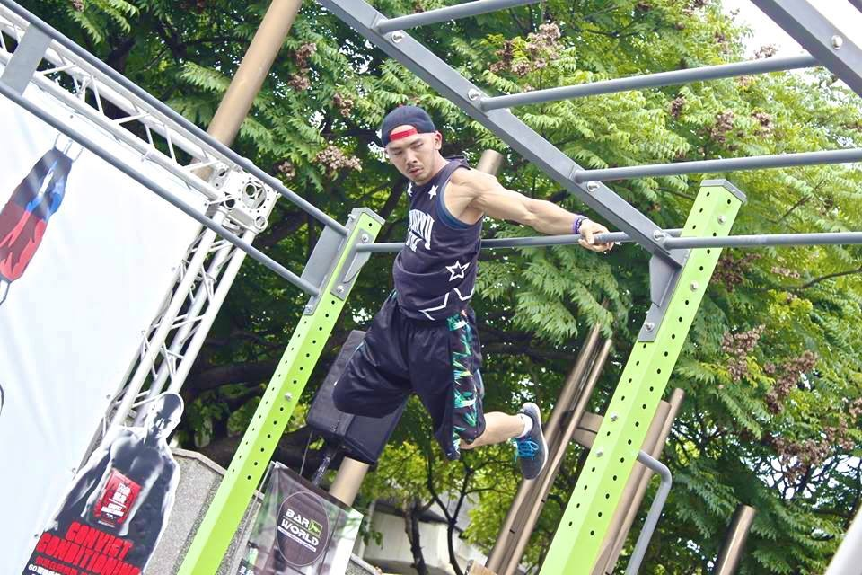

Street Workout Japan :)
ストリートワークアウトとは

ストリートワークアウトとは、
主に公園に設置されている『高鉄棒・平行棒・雲梯(うんてい)棒』などの健康器具を使用して『腕立て伏せ・懸垂・ディップス・腹筋運動・スクワット』を基本とした体作りの基本となるトレーニングに『ダンス・体操・パントマイム』などの様々なジャンルのパフォーマンス要素が組み合わさった、『新しい運動方法』でもあり『国際的なスポーツ』である。
『年齢・性別・運動経験・運動能力』など関係なく、誰でも遊び感覚で体づくりができるため、自然と正しい体の使い方も学ぶ事ができる。
また『国・人種・言語』など関係なく、世界中の人が『お互いを1人の人間』として認め、向き合い、交流を持つ事ができる『Community Sports・コミュニティースポーツ』として『地域活性化・青少年健全育成』に繋がる側面もあり、近年では教育現場にもストリートワークアウトを取り入れる国や団体も年々増えている。
[関連リンク] Wikipedia "ストリートワークアウト"
ストリートワークアウト協会の目的
Bushwick semiotics meh artisan, whatever gastropub pop-up narwhal Cosby sweater stumptown VHS synth kogi art party McSweeney's. Helvetica locavore actually cray paleo. +1 PBR gentrify, direct trade narwhal tattooed polaroid Helvetica readymade wolf Tumblr authentic try-hard hella. Try-hard 90's gentrify art party. Helvetica Intelligentsia +1, banjo try-hard tote bag organic fashion axe gluten-free chambray stumptown Echo Park beard. Craft beer DIY beard, roof party tofu plaid sustainable Tonx. Small batch letterpress salvia sartorial deep v ugh, High Life aesthetic hoodie Neutra Vice freegan flannel.
お問い合わせ
japanstreetworkout@gmail.com